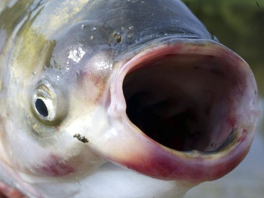
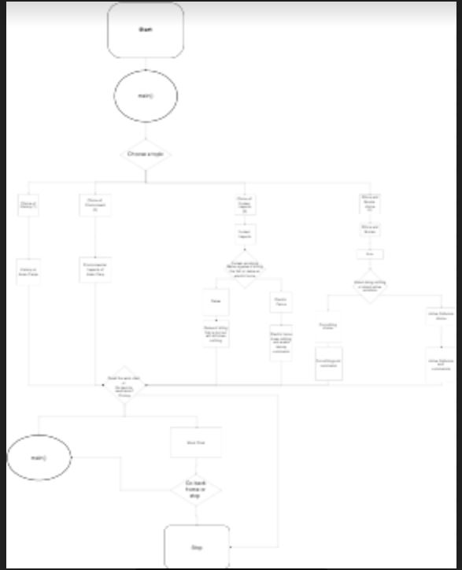

Sean Cornish
Student • Programmer • Professional

of myself moving across the screen while rotating.
Hit space and the reverse action will occur.

and Sean Cornish. This game is a 2 player
shooter in 8-bit fashion. try to kill your
opponent and be the last man standing.
players play with up, left, and right through
an obstacle course of fun and amazement.

numbered by priority. This list includes
specific notes on each aspect of the game, and
the current status of the objectives we set for
ourelves.

is a research paper done in my english class on
the invasion of asian carp in the U.S..
This report will inform readers in all areas of the
issue and do so through a fun and interactive python
program. Check out this project to learn more about asian
carp and have some fun using simple python functiomns
and decisions.

simple and straghit forward flow chart, click
the image above

conways game of life, a game devised by a famous
mathemetician. Give it a try and see how you fare!

a python file which analyses NBA teams popularity and
how frequently they win. The file represents trends in
the form of a scatter plot with a line of best fit.
A design brief is provided to explain the thought
process and the solution to the problem given.